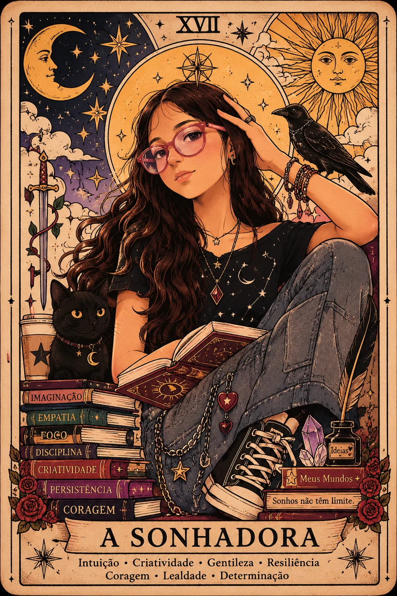

Jovem Escritora Paraense
Entre páginas,
magia e imaginação.
Conheça as histórias e os mundos criados por Aisha Faustino, uma jovem escritora apaixonada por transformar ideias em aventuras.
Continue a jornadaOnde uma ideia
se torna um universo
Todo mundo carrega uma história dentro de si. Estas são algumas das histórias que encontrei dentro de mim.
— Aisha Faustino

Uma jovem autora.Infinitos mundos.
Por trás das páginas
Conheça Aisha
Aisha Faustino é uma jovem escritora paraense apaixonada por livros, fantasia e criação de novos mundos.
Nascida em Redenção e moradora de Bannach, no Pará, começou a escrever suas primeiras histórias ainda muito jovem. Seu primeiro contato com a criação de livros aconteceu de maneira simples: Aisha cortava folhas de caderno para transformá-las em pequenos livros e preenchia aquelas páginas com personagens e aventuras que surgiam de sua imaginação.
Com incentivo da família, passou a escrever suas histórias no computador e começou a desenvolver projetos cada vez maiores. Hoje possui dois livros concluídos e trabalha em seu terceiro universo literário.
Aisha possui certificado de conclusão de curso pela Fundação Bradesco.
literários
concluídos
em criação
Biblioteca da autora
Histórias que já começaram
a ganhar vida
Três universos, três momentos de uma jornada que está apenas começando.
O próximo universo
Entre em Exside
Uma escola.
Um novo mundo.
E muitos segredos para descobrir.
Vanessa Doorman em Exside: Uma Escola de Magia é o projeto atual de Aisha e promete apresentar um universo completamente novo.
Vanessa DoormanEscola de MagiaMistériosAmizadesSegredosMagia
Da primeira folha ao novo universo
Minha Jornada
Uma história construída página por página, com imaginação e incentivo da família.
- 01
Primeiros passos
Criando pequenos livros com folhas de caderno.
- 02
Um Amor Predestinado
A primeira história que Aisha decidiu realmente concluir.
- 03
Um computador e novas possibilidades
Com incentivo da família, as histórias passaram do papel para o computador.
- 04
Arcane Academy
Uma história maior, mostrando sua evolução como escritora.
- 05
Vanessa Doorman em Exside
O início de um novo universo ambientado em uma escola de magia.
- 06
O começo de muitas histórias
Novos mundos ainda estão esperando para serem escritos.
Por trás das histórias
Uma ideia de cada vez
Imaginar
Tudo começa com uma ideia, uma personagem ou um mundo que ainda não existe.
Escrever
A história começa a ganhar forma através de capítulos, diálogos e aventuras.
Evoluir
Cada novo livro também representa uma nova etapa de aprendizado.
Para jovens escritores
Você também pode criar histórias.
Não é preciso começar com um livro perfeito. Às vezes, tudo começa com uma folha de caderno, uma personagem e muita imaginação.
Educação e inspiração
Para escolas e projetos de leitura
O projeto literário de Aisha também pretende incentivar outras crianças e adolescentes a descobrirem o prazer da leitura, da escrita e da criação de histórias.
Falar com os responsáveis
Rodas de conversaProjetos de leituraProdução textualIncentivo a jovens escritores
Vamos conversar
Contato e parcerias
Contatos relacionados a entrevistas, escolas, projetos literários, eventos e parcerias são recebidos, administrados e monitorados pelos pais/responsáveis legais de Aisha.
Para a segurança da autora, não há contato direto ou privado com Aisha através deste site.
EscolasImprensaProjetos literáriosParcerias
Canal oficial dos responsáveis em preparação.
Segurança e privacidade
Um projeto acompanhado pela família
Este projeto literário é acompanhado e monitorado pelos pais de Aisha, que são responsáveis pela administração do site, contatos, conteúdos publicados e futuras interações com leitores, escolas, imprensa e parceiros.